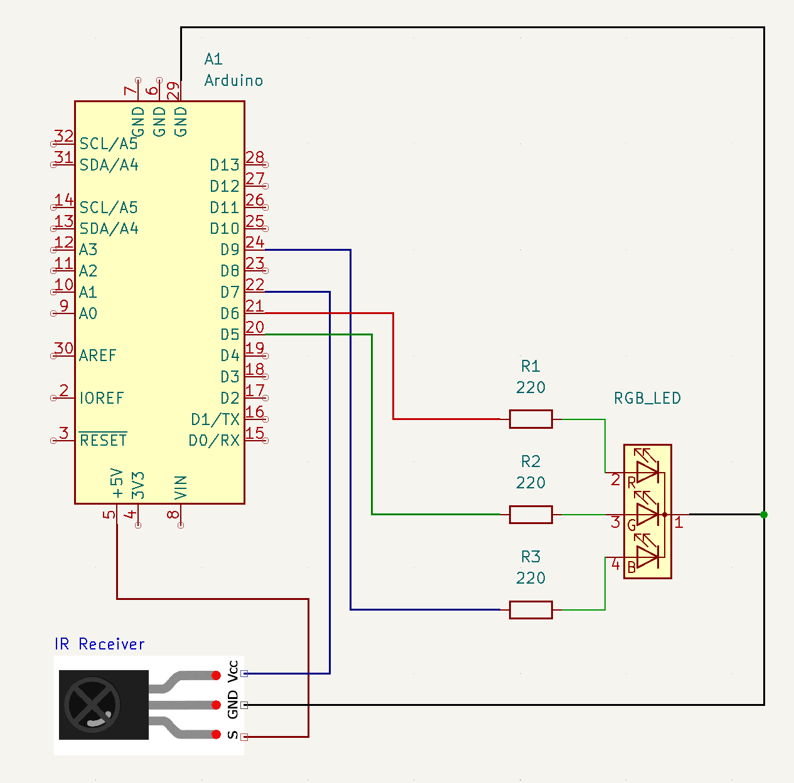
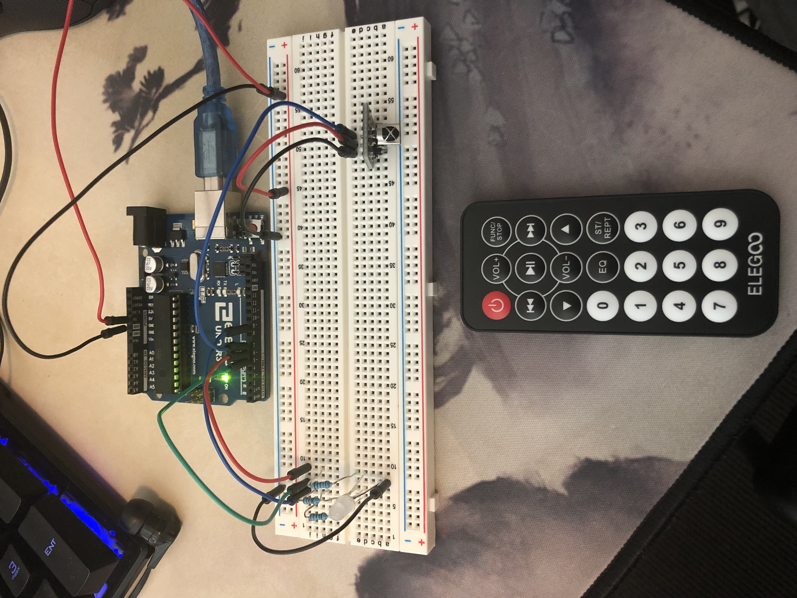

Richard's Assignment 4!

NOTE: Sorry about the gif brightness...I should have set the intensity to 100 instead of 255 as max.
Here is all the documentation for assignment 4!
I could not find the symbol for a joystick on KiCad so I imported an image. The wires don't exactly match up because of the spacing.
VRy is connected to A1
VRx is connected to A0
+5V is connected to power (+5V)
GND is connected to ground

This set up uses the servo library to create a functional RGB LED colour changer through a joystick. Using the joystick analog readings, I mapped
the x and y axis readings to blue and red, while keeping green at zero to avoid potential blindness. Users can play with the joystick to mix and match
blue and red, creating purple or pink hues.
The set up also uses a RGB LED so naturally it requires 3 resistors to keep the current in check.
R = V / I
R = (5 - 1.8) / 0.02 = 160 (Green and Red LEDs)
R = (5-3.4) / 0.02 = 80 (Blue LED)
I have chosen to use a 220 ohm resistor for all 3 legs as it will keep the current in the circuit under the
recommended amount, allowing the RGB LED to operate with good stability.

Breadboard setup.
Code for this joystick RGB changer set up:
int xValue; // Servo x axis output
int yValue; // Servo y axis output
#include // Servo library
Servo myServo; // Servo name
int red = 11; // RGB led red
int green = 10; // RGB led green (set as constant atm but can change if needed)
int blue = 9; // RGB led blue
const int greenVal = 0; // See above
// Initiate serial, initiate pin outputs
void setup() {
Serial.begin(9600);
for (int i = 9; i < 13; i++) {
pinMode(i, OUTPUT);
}
}
// Stores the readings from the joystick, trims them, and maps them to the colour values.
// Y axis value controls red sensitivity. X axis value controls blue sensitivity. Green is 0.
// Moving the joystick updates the RGB led and makes different colour combinations.
void loop() {
xValue = analogRead(A0); // Reads joystick X axis output and stores it
yValue = analogRead(A1); // Reads joystick Y axis output and stores it
xValue = constrain(xValue, 0, 1000); // Trims x axis reading
yValue = constrain(yValue, 0, 1000); // Trims y axis reading
int redVal = map(yValue, 0, 1000, 0, 255); // Maps yValue to red sensitivity
int blueVal = map(xValue, 0, 1000, 0, 255); // Maps xValye to blye sensitivity
analogWrite(blue, blueVal); // LED blue
analogWrite(red, redVal); // LED red
analogWrite(green, greenVal); // LED green (is 0 atm)
// Used for checking joystick outputs.
Serial.print("X= ");
Serial.print(xValue);
Serial.print("\t Y= ");
Serial.println(yValue);
delay(10);
}